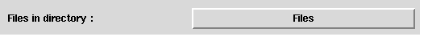
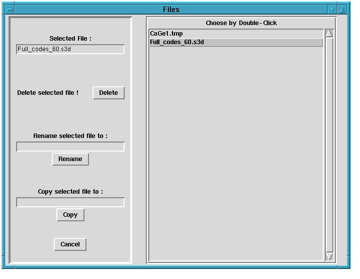
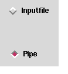
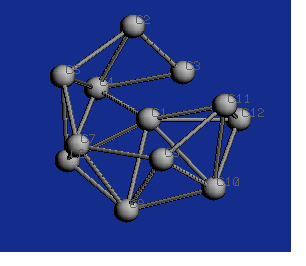
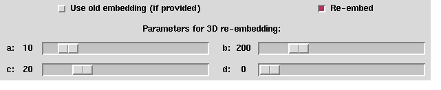

Up : Main
Prev : Generation programs
Next : Rasmol
CaGe V0.3
Input file
"Input file" is not a generation program. If you choose this option,
then the graph data will be read from a file instead. However, this case can
be treated like a generation process since it doesn't matter where the graphs
come from.
There are several codes which are used to store graphs. Not every code is
understood by CaGe. The codes which are understood by CaGe are exactly
the codes which can be written by CaGe, namely planar_code,
writegraph2d and writegraph3d{See section
codes
for a brief description}. If the input file contains a different
code, then CaGe will do nonsense. If the input file contains one of the
three codes mentioned, then CaGe will recognize automatically which code
is contained in the file.
Input options:
Input filename (entry):
The name of the input file is necessary. You can type
it into the related entry e.g. Full_codes_60.3d.
Input filename (button):
An other way to get the input file is to use the "Files"--button.
This causes that CaGe shows all files in the current directory, which contain
planar_code, writegraph2d or writegraph3d codes
{See section
codes
for a brief description}.

The files are shown in the left side of the "Files"--window and can be selected
be a double-click. After selecting e.g the Full_codes_60.3d file you can go on
by using the "Start"--button, or delete, rename or copy the selected file.

Pipe:
You can also use CaGe to display the output of external generation programs,
which use planar_code,
writegraph2d or writegraph3d
codes for the output {See section
codes for a brief description}.
This is done by "piping". First of all you have to use the "Pipe"--radiobutton:

Now we need a program to pipe.
For example the program planrti requires a number of atoms as an argument
and derives all triangulated graphs with this number of atoms.
So a correct program call of plantri is e.g. :
plantri 12
After starting you can use CaGe in the usual way, and get such triangulated graphs:

The following input options are important only if you wish to output embedded
graphs (on the display or into a file). They determine where to get the
embeddings from.

Use old embedding: If the input file contains embedding information,
i.e. information about the
coordinates of the vertices (atoms), then this information is used exactly if
the "Use old embedding"--checkbutton is switched on. If the input file does
not contain coordinates, then this checkbutton has no meaning.
Re--embed : If this checkbutton is switched on, then every graph will
be re--embedded (using spring and/or schlegel) before it will
be shown or written into a file.
If the input file does not contain embedding information, then CaGe will
call the embedding programs even if the "Re--embed"--checkbutton is not
switched on. This includes the case that the input file contains 2D information
and you want to see 3D representation (or vice versa). If the input file
contains embedding information and both checkbuttons are switched on, then
the behaviour of CaGe is as follows:
Every 2D embedding is
determined using schlegel without concerning
the old embedding.
Every old 3D embedding is used to build the new 3D embedding upon. If the
"Use old embedding"--checkbutton was not switched on, then spring
would take a default 3D embedding to start with.
The 3D embedding can be divided into four parts a,b,c and d.
The four related
sliders ("Parameters for 3D re--embedding") can be used to determine how
carefully each part will be computed. The value of b should be at least 10
times as high as a. The value of d should not be chosen too high since
the computation time depends linearly on d2.
For details see the original manual of spring.
Output options: See section
fullgen
.